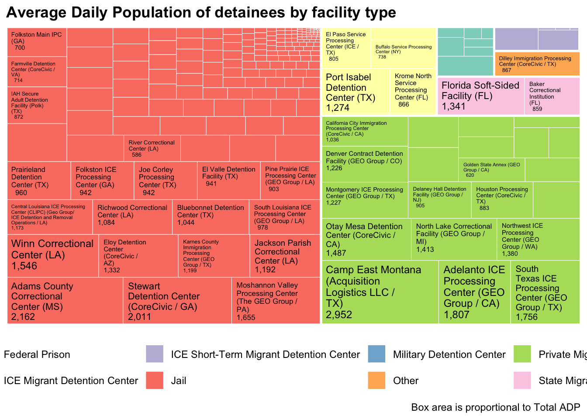

We will work from the data spreadsheets provided online at ICE’s Detention Management page, but will always maintain our own archived versions (as data files in our repository) and check that they are stored on the Internet Archive Wayback Machine for future use.
There are subtle changes between the Facilities page on each of these, which will have to take into account as we import them. The import code I created for the first time was built around the FY2026 spreadsheet.
The clean import script for the FY 2026 data is shared as a gist here. Feel free to use or modify it.
1.1 Initial Import
When you click the Render button a document will be generated that includes both content and the output of embedded code. You can embed code like this:
This code for the download only needs to executed once. The eval: false option disables the execution of the code chunk.
In scaling up to the set of spreadsheets, I had to think about which specifics from them affected my code. This metadata is what I included here: the fiscal year, filenames, name of the sheet within the .xlsx document, position of the header rows, and rightmost column of the data.
This allows for some automatically calculated data for later use, such as the first data row and the number of that rightmost column.
# Download all filesfor (i in1:nrow(data_file_info)) { httr::GET(data_file_info$url[i],write_disk(data_file_info$local_file[i], overwrite =FALSE))}
2 Importing the variables
Next we import the two-line headers and combine them into variable names. This took a fair amount of experimentation the first time.
Code
header_rows <-function(data_file_info_row){with(data_file_info_row, { first_row <-read_excel( local_file,sheet = sheet_name,range =cell_limits(ul =c(first_header_row, 1),lr =c(first_header_row, right_column_num) ),col_names =FALSE ) second_row <-read_excel( local_file,sheet = sheet_name,range =cell_limits(ul =c(second_header_row, 1),lr =c(second_header_row, right_column_num) ),col_names =FALSE )rbind(first_row, second_row) })}# This single call generates the headers for FY26 as a test# raw_headers <- header_rows(data_file_info %>% filter(year_name == "FY26"))# Create a list of headers for each spreadsheetraw_headers_list <-map(1:nrow(data_file_info), function(i) {header_rows(data_file_info[i, ])})names(raw_headers_list) <- data_file_info$year_name
Code
# 2. Create Clean Variable Names# - Transpose headers to columns for easier filling# - Fill the top header row (Row 9) downward to cover merged cells# - Remove "FY26"# - Combine Top and Bottom headers# - Format to snake_case (lowercase with underscores)clean_variable_names_from_header <-function(raw_headers) { clean_names <- raw_headers %>%t() %>%as.data.frame() %>%fill(V1) %>%# Propagate Row 9 headersmutate(# Remove "FY26" and extra whitespace from both header partsV1 =str_trim(str_remove_all(V1, "FY\\d\\d")),V1 =str_remove_all(V1, ":"), # Remove colons if presentV2 =str_trim(str_remove_all(V2, "FY\\d\\d")),V2 =str_remove_all(V2, ":"),V1 =case_when( # clean extra wordsstr_detect(V1, "This list") ~"Facility", V1 =="Facility Information"~"Facility",# str_detect(V1, "Average Length of Stay") ~ "ALOS", V1 =="ADP Detainee Classification Level"~"ADP Detainee Classification", V1 =="ADP Detainee Security Level"~"ADP Detainee Security", V1 =="ADP ICE Threat Level"~"ADP", V1 =="ADP Mandatory"~"ADP", V1 =="Contract Facility Inspections Information"~"Inspections",TRUE~ V1 ),# Combine Row 9 (V1) and Row 10 (V2)combined =paste(V1, V2),# Clean: Lowercase, replace special chars with _, remove duplicatesvar_name =tolower(combined),var_name =str_replace_all(var_name, "[^a-z0-9]+", "_"),var_name =str_remove_all(var_name, "^_+|_+$") # Remove leading/trailing _ ) %>%pull(var_name) clean_names}clean_names_list <-map(raw_headers_list, clean_variable_names_from_header)names(clean_names_list) <- data_file_info$year_name# clean_names_list$FY24 # This would print out the variables from one sheet
Now we need to check if the variables are the same across multiple years. (Hopefully some of our simplifying helped with that.) This graphing package may seem like overkill, but it really simplified my work here.
# Create a dataframe showing which variables are in which listspresence_matrix <- clean_names_list %>%imap_dfr(~tibble(variable = .x, list_name = .y)) %>%mutate(present =TRUE) %>%pivot_wider(names_from = list_name, values_from = present, values_fill =FALSE)
Looking at that graph, I see that most variables are there in all the data sheets, but there are some differences. We can use the presence_matrix dataframe to see which variables are missing from which years.
Variables not in all sheets: inspections_last_inspection_standard, inspections_last_inspection_rating_final, inspections_last_inspection_date, inspections_second_to_last_inspection_type, inspections_second_to_last_inspection_standard, inspections_second_to_last_inspection_rating, inspections_second_to_last_inspection_date, inspections_odo_inspection_end_date, inspections_odo_last_inspection_standard, inspections_odo_final_rating, inspections_last_nakamoto_inspection_standard, inspections_last_nakamoto_inspection_rating_final, inspections_last_nakamoto_inspection_date, inspections_second_to_last_nakamoto_inspection_type, inspections_second_to_last_nakamoto_inspection_standard, inspections_second_to_last_nakamoto_inspection_date, inspections_last_inspection_end_date, inspections_pending_inspection, inspections_last_final_rating
9 variables only in FY23: inspections_odo_inspection_end_date, inspections_odo_last_inspection_standard, inspections_odo_final_rating, inspections_last_nakamoto_inspection_standard, inspections_last_nakamoto_inspection_rating_final, inspections_last_nakamoto_inspection_date, inspections_second_to_last_nakamoto_inspection_type, inspections_second_to_last_nakamoto_inspection_standard, inspections_second_to_last_nakamoto_inspection_date
Fortunately, nearly all variables are in all years. And the differences in the variables seem to all consist in how inspections are reparted. We may want to think through how to re-create inspections_last_inspection_date based on the other data, but I’ll ignore that problem for now.
3 Importing the data
Code
clean_facility_names <-function(x) {# 1. Base conversion to Title Case x <-str_to_title(x)# 2. Typos and Truncations found in your specific list x <-str_replace_all(x, "Facili\\b", "Facility") # Fixes #3 x <-str_replace_all(x, "Processsing", "Processing") # Fixes #155# 3. Expansion Map (Abbreviations -> Full Words)# Using word boundaries (\\b) to prevent replacing inside other words. expansions <-c("\\bDept\\.?\\b"="Department","\\bCtr\\.?\\b"="Center","\\bCorr\\.?\\b"="Correctional","\\bInst\\.?\\b"="Institution","\\bFed\\.?\\b"="Federal","\\bDet\\.?\\b"="Detention","\\bFac\\.?\\b"="Facility","\\bCo\\.?\\b"="County" ) x <-str_replace_all(x, expansions)# 4. Acronym Restoration (Re-capitalizing)# These were turned into "Ice", "Mdc" etc. by str_to_title acronyms <-c("\\bOf\\b"="of", # keep "of" lowercase"\\bUs\\b"="US", # keep "US" uppercase; this would'nt work on general text"\\bIce\\b"="ICE","\\bEro\\b"="ERO","\\bMdc\\b"="MDC","\\bCca\\b"="CCA","\\bFci\\b"="FCI","\\bFdc\\b"="FDC","\\bJtf\\b"="JTF","\\bSsm\\b"="SSM","\\bTgk\\b"="TGK","\\bIpc\\b"="IPC","\\bSpc\\b"="SPC","\\bIah\\b"="IAH","\\bClipc\\b"="CLIPC","\\bDigsa\\b"="DIGSA","\\bIgsa\\b"="IGSA" ) x <-str_replace_all(x, acronyms)# 5. State Abbreviation Expansions# Handles both (FL) and comma formats like ", NM" states <-c("\\(Fl\\)"="(Florida)","\\(In\\)"="(Indiana)","\\(Mo\\)"="(Missouri)","\\(Mt\\)"="(Montana)","\\(Ne\\)"="(Nebraska)","\\(Ny\\)"="(New York)","\\(Tx\\)"="(Texas)","\\(Ut\\)"="(Utah)",", Nm\\b"=", New Mexico",", Mt\\b"=", Montana" ) x <-str_replace_all(x, states)# Facility Name Specific Fixes names <-c("CCA, Florence Correctional Center"="Central Arizona Florence Correctional Complex","Eloy Federal Contract Facility"="Eloy Detention Center","T Don Hutto Detention Center"="T. Don Hutto Detention Center","Torrance/Estancia, New Mexico"="Torrance County Detention Facility","Houston Contract Detention Facility"="Houston Processing Center","Elizabeth Contract Detention Facility"="Elizabeth Detention Center","Folkston D Ray ICE Processing Center"="Folkston ICE Processing Center","Robert A Deyton Detention Facility"="Robert A. Deyton Detention Center","ERO El Paso Camp East Montana"="Camp East Montana","Port Isabel SPC"="Port Isabel Detention Center","Bluebonnet Detention Facility"="Bluebonnet Detention Center" ) x <-str_replace_all(x, names)return(x)}# 4. Import the "Facilities" sheet# facilities_data <- read_xlsx(local_file, sheet = sheet_name)read_facilities_data <-function(data_file_info_row){with(data_file_info_row, {read_xlsx( local_file,sheet = sheet_name,range =cell_limits(ul =c(first_data_row, 1), lr =c(NA, right_column_num)),col_names = clean_names_list[[year_name]] # Use precomputed clean names# A more elegant programming approach,# might incorporate them into data_file_info ) })}fix_city_names <-function(x) { x <-str_replace_all(x, "Ft.lauderdale", "Fort Lauderdale") x <-str_replace_all(x, "Ft. Lauderdale", "Fort Lauderdale") x <-str_replace_all(x, "Cottonwood Fall", "Cottonwood Falls") x <-str_replace_all(x, "Sault Ste Marie", "Sault Ste. Marie") x <-str_replace_all(x, "Bunkerhill", "Bunker Hill") x <-str_replace_all(x, "Mcelhattan", "McElhattan") x <-str_replace_all(x, "Mcfarland", "McFarland") x <-str_replace_all(x, "Mccook", "McCook") x <-str_replace_all(x, "Mccall", "McCall") x}clean_facilities_data <-function(facilities_data) { numerical_columns =c("facility_average_length_of_stay_alos", "adp_detainee_classification_level_a","adp_detainee_classification_level_b", "adp_detainee_classification_level_c","adp_detainee_classification_level_d", "adp_criminality_male_crim","adp_criminality_male_non_crim", "adp_criminality_female_crim","adp_criminality_female_non_crim", "adp_ice_threat_level_1","adp_ice_threat_level_2", "adp_ice_threat_level_3", "adp_no_ice_threat_level","adp_mandatory", "inspections_guaranteed_minimum") numerical_columns_present <- numerical_columns[numerical_columns %in%names(facilities_data)] facilities_data_clean <- facilities_data %>%mutate(# 1. Convert specific columns to Numeric and round to 1 decimalacross(.cols = facility_average_length_of_stay_alos:adp_mandatory,.fns =~round(as.numeric(.), 1) ),# 2. Convert Guaranteed Minimum to Integerinspections_guaranteed_minimum =as.integer(inspections_guaranteed_minimum),# Standardize Last Inspection Type valuesinspections_last_inspection_type =case_when( inspections_last_inspection_type %in%c("PRE-OCCUPANCY", "Pre-Occupancy") ~"PREOCC", # Standardize Pre-OccupancyTRUE~ inspections_last_inspection_type ),# Adjust capitalizationfacility_name =clean_facility_names(facility_name),facility_city =str_to_title(facility_city),facility_address =str_to_title(facility_address),facility_male_female =str_to_title(facility_male_female),# Some minor name clean upfacility_city =fix_city_names(facility_city),# 4. Ensure all other columns are Characters (as requested)# We exclude the columns we just processed to avoid overwriting themacross(.cols =-numerical_columns_present,.fns = as.character ) ) guantanamo_patch <-tibble(facility_name ="JTF Camp Six",facility_city ="Guantanamo Bay",facility_state ="Cuba",facility_address ="Bldg 2144, U.S. Naval Station Guantanamo Bay", ) facilities_data_clean <- facilities_data_clean %>%rows_update(guantanamo_patch, by ="facility_name", unmatched ="ignore")# ignore because the Guantanamo patch doesn't apply to earlier years facilities_data_clean}aggregate_facilties_data <-function(facilities_data) { facilities_data <- facilities_data %>%mutate(sum_classification_levels =rowSums(select(., starts_with("adp_detainee_classification_level_")),na.rm =TRUE ),sum_criminality_levels =rowSums(select(., starts_with("adp_criminality_")),na.rm =TRUE ),sum_threat_levels =rowSums(select(., starts_with("adp_ice_threat_level_")|(starts_with("adp_no_ice_threat_level"))),na.rm =TRUE ) ) %>%mutate(share_non_crim = (adp_criminality_male_non_crim + adp_criminality_female_non_crim) / sum_criminality_levels,share_no_threat = ( adp_no_ice_threat_level) / sum_threat_levels ) %>%# Assign typemutate(facility_type_wiki =case_when(str_detect(facility_type_detailed, "IGSA") ~"Jail",str_detect(facility_type_detailed, "USMS IGA") ~"Jail",str_detect(facility_type_detailed, "DIGSA") ~"Dedicated Migrant Detention Center",str_detect(facility_type_detailed, "STATE") ~"State Migrant Detention Center",str_detect(facility_type_detailed, "BOP") ~"Federal Prison",str_detect(facility_type_detailed, "Family") ~"Private Family Detention Center",str_detect(facility_type_detailed, "CDF") ~"Private Migrant Detention Center",str_detect(facility_type_detailed, "USMS CDF") ~"Private Migrant Detention Center",str_detect(facility_type_detailed, "SPC") ~"ICE Migrant Detention Center",str_detect(facility_type_detailed, "STAGING") ~"ICE Short-Term Migrant Detention Center",str_detect(facility_type_detailed, "DOD") ~"Military Detention Center",TRUE~"Other" ) )}# facilities_data_list <- map(1:nrow(data_file_info), function(i)# read_facilities_data(data_file_info[i, ])# )# names(facilities_data_list) <- facilities_data_list <-map(1:nrow(data_file_info), function(i)read_facilities_data(data_file_info[i, ]) %>%clean_facilities_data() %>%aggregate_facilties_data())
Warning: There was 1 warning in `mutate()`.
ℹ In argument: `across(.cols = -numerical_columns_present, .fns =
as.character)`.
Caused by warning:
! Using an external vector in selections was deprecated in tidyselect 1.1.0.
ℹ Please use `all_of()` or `any_of()` instead.
# Was:
data %>% select(numerical_columns_present)
# Now:
data %>% select(all_of(numerical_columns_present))
See <https://tidyselect.r-lib.org/reference/faq-external-vector.html>.
Warning: There was 1 warning in `mutate()`.
ℹ In argument: `inspections_guaranteed_minimum =
as.integer(inspections_guaranteed_minimum)`.
Caused by warning:
! NAs introduced by coercion
library(httr)library(rvest)# 1. Define URL and Fetch Pageurl <-"https://en.wikipedia.org/w/index.php?title=List_of_immigrant_detention_sites_in_the_United_States&oldid=1334453072"response <-GET(url)page <-read_html(content(response, as ="text"))# 2. Select the target table nodetable_node <-html_element(page, "table.wikitable")# 3. Extract the standard table textw_detention_sites_tb <-html_table(table_node)# 4. Extract links from the first column specifically# We select all rows, then extract the 'href' from the 'a' tag in the first 'td'rows <-html_elements(table_node, "tr")# Note: We use map_chr to ensure we handle rows without links (like headers) correctlylinks <-map_chr(rows, function(row) {# Look for the first data cell, then an anchor tag inside it link_node <-html_element(row, "td:first-child a") href <-html_attr(link_node, "href")if (is.na(href)) {return(NA_character_) } else {# Construct full URLreturn(paste0("https://en.wikipedia.org", href)) }})# 5. Clean and Merge# Remove the first element of links if it corresponds to the header rowif (length(links) >nrow(w_detention_sites_tb)) { links <- links[(length(links) -nrow(w_detention_sites_tb) +1):length(links)]}w_detention_sites_tb <- w_detention_sites_tb %>%add_column(link = links, .after =1)%>%mutate(linked_article =case_when(str_detect(link, "/wiki/") ~ {# Extract everything after /wiki/ slug <-str_extract(link, "(?<=/wiki/).*")str_replace_all(slug, "_", " ") },TRUE~NA_character_),#extract text befoe any parentheses or brackets for the primary nameprimary_name =str_extract(Name, "^[^\\(]+") # Extract text before any parentheses )clean_variable_names <-function(df) { df %>%rename_with(~str_replace_all(., "[^a-zA-Z0-9]+", "_")) %>%rename_with(~str_remove_all(., "^_+|_+$")) %>%rename_with(tolower)}w_detention_sites_tb <-clean_variable_names(w_detention_sites_tb) %>%mutate(wiki_slug =case_when(str_detect(link, "/wiki/") ~ {# Extract everything after /wiki/ slug <-str_extract(link, "(?<=/wiki/).*")str_replace_all(slug, "_", " ") },TRUE~""# Return empty string if /wiki/ is not found ) ) %>%separate(location, into =c("city", "state"), sep =",\\s*", extra ="merge", fill ="right")# Optional: Final cleanup of text and bracketsw_detention_sites_tb <- w_detention_sites_tb %>%mutate(across(where(is.character), ~gsub("\\[\\d+\\]", "", .)))print(w_detention_sites_tb)
# A tibble: 395 × 15
name link status_year city state facility_type security authority
<chr> <chr> <chr> <chr> <chr> <chr> <chr> <chr>
1 Adelanto ICE … http… In use (20… Adel… Cali… Prison "" DHS/ICE
2 Ada County Ja… <NA> In use (20… Boise Idaho Prison "Secure" DHS/ICE
3 Adams County … <NA> In use (20… Brig… Colo… Prison "Secure" DHS/ICE
4 Aguadilla Ser… <NA> In use (20… Agua… Puer… Migrant dete… "Secure" DHS/ICE
5 Alamance Coun… <NA> In use (20… Grah… Nort… Prison "Secure" DHS/ICE
6 Albany County… <NA> No Longer … Alba… New … Prison "Secure" DHS/ICE
7 Albany County… <NA> In use (20… Lara… Wyom… Prison "Secure" DHS/ICE
8 Albuquerque R… <NA> In use (20… Albu… New … Prison "Secure" DHS/ICE
9 Alexandria Ci… http… In use (20… Alex… Virg… Prison "Secure" DHS/ICE
10 Allegheny Cou… http… In use (20… Pitt… Penn… Prison "Secure" DHS/ICE
# ℹ 385 more rows
# ℹ 7 more variables: management <chr>, capacity <chr>,
# max_single_day_pop <chr>, demographicsand_segregation <chr>,
# linked_article <chr>, primary_name <chr>, wiki_slug <chr>
Code
compare_ice_wiki_duplicates <-function(ice_df, wiki_df) {# 1. Prepare ICE Data ice_clean <- ice_df %>%transmute(original_name = facility_name,clean_name =str_to_upper(str_trim(facility_name)),clean_city =str_to_upper(str_trim(facility_city)),# Standardizing state to full name upper case to match wikiclean_state =str_to_upper(state.name[match(facility_state, state.abb)]),source ="ICE" )# 2. Prepare Wikipedia Data wiki_clean <- wiki_df %>%# separate(location, into = c("city", "state"), # sep = ",\\s*", extra = "merge", fill = "right") %>%transmute(original_name = name, # Use lowercase 'name'clean_name =str_to_upper(str_trim(name)),clean_city =str_to_upper(str_trim(city)),clean_state =str_to_upper(str_trim(state)),source ="Wiki" )# 3. Combine and find location-based variants comparison <-bind_rows(ice_clean, wiki_clean) %>%filter(!is.na(clean_city), !is.na(clean_state)) %>%group_by(clean_city, clean_state) %>%summarise(num_variants =n_distinct(clean_name),in_both =all(c("ICE", "Wiki") %in% source),# Extract names assigned to ICE sourceice_variants =paste(unique(original_name[source =="ICE"]), collapse =" | "),# Extract names assigned to Wiki sourcewiki_variants =paste(unique(original_name[source =="Wiki"]), collapse =" | "),# Keep the combined version for referenceall_name_variants =paste(unique(original_name), collapse =" | "),sources =paste(unique(source), collapse =" & "),.groups ="drop" ) %>%filter(num_variants >1) %>%mutate(location =paste(clean_city, clean_state, sep =", ")) %>%select(location, num_variants, in_both, ice_variants, wiki_variants, all_name_variants, sources) %>%arrange(desc(num_variants), desc(in_both))return(comparison)}names_with_wikilinks <- w_detention_sites_tb %>%filter(wiki_slug !="") %>%pull(name)names_with_management_info <- w_detention_sites_tb %>%filter(management !="") %>%pull(name)duplicate_table <-compare_ice_wiki_duplicates(facilities_data_list$FY26, w_detention_sites_tb) %>%filter(in_both) %>%filter(num_variants >=2) %>%select(ice_variants, wiki_variants, location) %>%mutate(has_wiki_link =case_when(str_detect(wiki_variants, "\\|") ~FALSE, # "multiple wiki variants",str_trim(wiki_variants) %in% names_with_wikilinks ~TRUE,TRUE~FALSE)) %>%mutate(has_management_info =case_when(str_detect(wiki_variants, "\\|") ~FALSE, # "multiple wikistr_trim(wiki_variants) %in% names_with_management_info ~TRUE,TRUE~FALSE))wiki_name_match_table <- duplicate_table %>%filter(!str_detect(ice_variants, "\\|")) %>%filter(!str_detect(wiki_variants, "\\|")) %>%filter(has_wiki_link | has_management_info)# hand verifieddoes_not_match <-c("Farmville Detention Center", "Dallas County Jail - Lew Sterrett Justice Center","Leavenworth US Penitentiary","IAH Secure Adult Detention Facility (Polk)","FDC Philadelphia","El Valle Detention Facility","Greene County Jail")wiki_name_match_table <- wiki_name_match_table %>%filter(!(ice_variants %in% does_not_match))nrow(wiki_name_match_table)
[1] 21
Current status: - 36 city/state matches, most of which are the same facility with different names (duplicate_table %>% filter(in_both) %>% filter(num_variants ==2) %>% select(4, 5) %>% print(n=100)) - 50 with the same name in FY26 ICE data and on Wikipedia (which(current_facility_names %in% w_detention_sites_tb$Name))
But 223 are listed for FY26 altogether and 395 are on the Wikipedia page. So a lot more to characterize. (Most of these might by in other places and the city/state data might be enough for that; just 17 on the Wikipedia page lack a location w_detention_sites_tb %>% filter(Location==""), but 15 of these have a link.)
Next step is to check for how many of the items with Wikipedia links are in these sets, because those matches are most important.
Further step is to merge these tables together and integrate the Wikipedia links and useful Wikipedia data, which is mostly the Management column.
Code
source("src/add-wikipedia-matches.R")# To generate this table, we're actually inserting this code# AFTER the next chunk (add-match-table-to-fy26-ice-data), but# it's easier to insert the results here instead of making a # more complex case_when statement.# Heads up: this is a very slow function call!# facilities_fy26_wiki_matches <- facilities_data_merged$FY26 %>%# add_wikipedia_matches(name_col = "facility_name")# saveRDS(facilities_fy26_wiki_matches, here::here("data", "facilities_fy26_wiki_matches.rds"))#facilities_fy26_wiki_matches <-readRDS(here::here("data", "facilities_fy26_wiki_matches.rds"))facilities_fy26_wiki_matches %>%count(!is.na(wiki_match), wikipedia_match) %>%rename(previous_match =1,match_by_wikipedia_search =2)
facility_name facility_state
1 Adams County Correctional Center MS
2 Baker Correctional Institution FL
3 Boone County Jail KY
4 Broward Transitional Center FL
5 Cibola County Correctional Center NM
6 Cumberland County Jail ME
7 Davis County UT
8 Douglas County WI
9 Eden Detention Center TX
10 Franklin County Jail PA
11 Glades County Detention Center FL
12 Irwin County Detention Center GA
13 Jefferson County Jail ID
14 Lawrence County SD
15 North Lake Correctional Facility MI
16 Northeast Ohio Correctional Center OH
17 Otay Mesa Detention Center CA
18 Plymouth County Correctional Facility MA
19 Pottawattamie County Jail IA
20 Richwood Correctional Center LA
21 Rio Grande Detention Center TX
22 South Louisiana ICE Processing Center LA
23 Southern Regional WV
24 Stewart Detention Center GA
25 Val Verde Correctional Facility TX
26 Winn Correctional Center LA
wiki_slug
1 <NA>
2 <NA>
3 Boone County Jail
4 Broward Transitional Center
5 <NA>
6 Cumberland County Jail
7 <NA>
8 <NA>
9 <NA>
10 <NA>
11 Glades County Detention Center
12 Irwin County Detention Center
13 <NA>
14 <NA>
15 <NA>
16 <NA>
17 <NA>
18 Plymouth House of Correction
19 Pottawattamie County Jail
20 <NA>
21 Rio Grande Detention Center
22 <NA>
23 <NA>
24 Stewart Detention Center
25 Val Verde Correctional Facility
26 <NA>
Code
exclude_list <-c("Boone County Jail","Davis County","Douglas County","Franklin County Jail", # needs new page for new jail in C, PA"Jefferson County Jail", # no page for Idaho jail"Lawrence County","Pottawattamie County Jail", # references historic site; needs new page"Southern Regional" )facilities_fy26_wiki_match_list <- facilities_fy26_wiki_matches %>%filter(wikipedia_match) %>%filter(!is.na(wiki_match)) %>%#new matches onlyfilter(!facility_name %in% exclude_list) %>%select(1, wikipedia_title) # Notes on better names:# "Davis County" > "Davis County Correctional Facility" (Utah) / no wiki page# "Southern Regional" > "Southern Regional Jail and Correctional Facility"
Code
# Generate a match table based on city/state matches and Wikipedia links# Add a match column to the FY26 ICE data # indicating if there's a Wikipedia matchfacilities_data_merged <-list()facilities_data_merged$FY26 <- facilities_data_list$FY26 %>%mutate(clean_state = state.name[match(facility_state, state.abb)] ) %>%mutate(wiki_match =case_when(# Condition 1: Exact match in the main wiki table facility_name %in% w_detention_sites_tb$name ~ facility_name,# Condition 2: Match via the lookup table facility_name %in% wiki_name_match_table$ice_variants ~ wiki_name_match_table$wiki_variants[match(facility_name, wiki_name_match_table$ice_variants)],# Condition 3: Match via the Wikipedia search function facility_name %in% facilities_fy26_wiki_match_list$facility_name ~ facilities_fy26_wiki_match_list$wikipedia_title[match(facility_name, facilities_fy26_wiki_match_list$facility_name)],TRUE~NA_character_ )) %>%left_join(select(w_detention_sites_tb, name, state, wiki_slug, management),by =c("wiki_match"="name", "clean_state"="state") ) facilities_data_merged$FY26 %>%filter(!is.na(wiki_match)) %>%relocate(facility_name, wiki_match, wiki_slug, management) %>%print(n=100)
# A tibble: 75 × 37
facility_name wiki_match wiki_slug management facility_address facility_city
<chr> <chr> <chr> <chr> <chr> <chr>
1 Adams County … Adams Cou… <NA> <NA> 20 Hobo Fork Rd. Natchez
2 Adelanto ICE … Adelanto … "Adelant… "GEO Grou… 10250 Rancho Ro… Adelanto
3 Baker Correct… Baker Cor… <NA> <NA> 20706 Us 90 W Sanderson
4 Boone County … Boone Cou… "Boone C… "Boone Co… 3020 Conrad Lane Burlington
5 Broward Trans… Broward T… "Broward… "Geo Grou… 3900 North Powe… Pompano Beach
6 Butler County… Butler Co… <NA> <NA> 705 Hanover Str… Hamilton
7 Cambria Count… Cambria C… "Cambria… "Cambria … 425 Manor Drive Ebensburg
8 Cass County J… Cass Coun… "" "" 336 Main Street Plattsmouth
9 Central Louis… LaSalle D… "LaSalle… "Geo Grou… 830 Pinehill Ro… Jena
10 Chase County … Chase Cou… "" "" 301 South Walnu… Cottonwood F…
11 Chippewa Coun… Chippewa … "" "Chippewa… 325 Court Street Sault Ste. M…
12 Cibola County… Cibola Co… <NA> <NA> 2000 Cibola Loop Milan
13 Clinton Count… Clinton C… "" "" 58 Pine Mountai… McElhattan
14 Clinton Count… Clinton C… "" "" 25 Mccarthy Dri… Plattsburgh
15 Clinton Count… Clinton C… <NA> <NA> 301 E Walnut St… Frankfort
16 Cumberland Co… Cumberlan… "Cumberl… "" 50 County Way Portland
17 Delaney Hall … Delaney H… "" "GEO Grou… 451 Doremus Ave… Newark
18 Denver Contra… Aurora Co… "" "GEO Grou… 3130 Oakland St Aurora
19 Dilley Immigr… South Tex… "South T… "CoreCivi… 300 El Rancho W… Dilley
20 Dodge County … Dodge Cou… "" "Dodge Co… 215 West Centra… Juneau
21 Eden Detentio… Eden Dete… <NA> <NA> 702 E Broadway … Eden
22 El Paso Servi… El Paso S… "" "ICE" 8915 Montana Av… El Paso
23 Elizabeth Det… Elizabeth… <NA> <NA> 625 Evans Street Elizabeth
24 Eloy Detentio… Eloy Dete… "Eloy De… "Correcti… 1705 East Hanna… Eloy
25 Erie County J… Erie Coun… "" "Erie Cou… Department Of C… Erie
26 Camp East Mon… Camp East… <NA> <NA> 6920 Digital Rd El Paso
27 Etowah County… Etowah Co… "" "Etowah C… 827 Forrest Ave… Gadsden
28 Farmville Det… Farmville… <NA> <NA> 508 Waterworks … Farmville
29 Franklin Coun… Franklin … <NA> <NA> 625 Franklin Fa… Chambersburg
30 Glades County… Glades Co… "Glades … "Glades C… 1297 East Sr 78 Moore Haven
31 Grayson Count… Grayson C… "" "" 320 Shaw Statio… Leitchfield
32 Hardin County… Hardin Co… "" "" 1116 14th Avenue Eldora
33 Honolulu Fede… Honolulu … "Federal… "Federal … 351 Elliott St. Honolulu
34 Irwin County … Irwin Cou… "Irwin C… "LaSalle … 132 Cotton Drive Ocilla
35 Jefferson Cou… Jefferson… <NA> <NA> 219 East Fremon… Rigby
36 Limestone Cou… Limestone… "" "Communit… 910 North Tyus … Groesbeck
37 Lincoln Count… Lincoln C… <NA> <NA> 3020 N Jeffers North Platte
38 Linn County J… Linn Coun… "" "Linn Cou… 53 3rd Avenue B… Cedar Rapids
39 Madison Count… Madison C… <NA> <NA> 2935 Highway 51 Canton
40 Marion County… Marion Co… "" "" 695 Justice Way Indianapolis
41 Miller County… Miller Co… "" "" 2300 East Street Texarkana
42 Minicassia De… Minicassi… "" "" 1415 Albion Ave… Burley
43 Minnehaha Cou… Minnehaha… "" "" 500 North Minne… Sioux Falls
44 Moshannon Val… Moshannon… "Moshann… "The GEO … 555 Geo Drive Philipsburg
45 Natrona Count… Natrona C… "" "" 1100 Bruce Lane Casper
46 Niagara Count… Niagara C… "" "New York… 5526 Niagara St… Lockport
47 North Lake Co… North Lak… <NA> <NA> 1805 W 32nd St Baldwin
48 Northeast Ohi… Northeast… <NA> <NA> 2240 Hubbard Ro… Youngstown
49 Northern Regi… Northern … "" "" Rd. 2, Box 1 Moundsville
50 Otay Mesa Det… Otay Mesa… <NA> <NA> 7488 Calzada De… San Diego
51 Otero County … Otero Cou… "Otero C… "Manageme… 26 Mcgregor Ran… Chaparral
52 Pine Prairie … Pine Prai… "" "LCS Corr… 1133 Hampton Du… Pine Prairie
53 Pinellas Coun… Pinellas … "Pinella… "" 14400 49th Stre… Clearwater
54 Plymouth Coun… Plymouth … "Plymout… "Plymouth… 26 Long Pond Ro… Plymouth
55 Polk County J… Polk Coun… "" "" 1985 Ne 51st Pl… Des Moines
56 Pottawattamie… Pottawatt… "Pottawa… "Pottawat… 1400 Big Lake R… Council Bluf…
57 Richwood Corr… Richwood … <NA> <NA> 180 Pine Bayou … Monroe
58 Rio Grande De… Rio Grand… "Rio Gra… "GEO Grou… 1001 San Rio Bo… Laredo
59 Riverside Reg… Riverside… "" "" 1000 River Road Hopewell
60 Rockingham Co… Rockingha… "" "" 25 South Libert… Harrisonburg
61 Sebastian Cou… Sebastian… "" "" 801 South A Str… Fort Smith
62 Seneca County… Seneca Co… "" "Seneca C… 3040 South Stat… Tiffin
63 Sherburne Cou… Sherburne… "" "Sherburn… 13880 Business … Elk River
64 South Louisia… South Lou… <NA> <NA> 3843 Stagg Aven… Basile
65 Stewart Deten… Stewart D… "Stewart… "Correcti… 146 Cca Road Lumpkin
66 T. Don Hutto … T. Don Hu… "T. Don … "Correcti… 1001 Welch Stre… Taylor
67 Torrance Coun… Torrance … "" "Correcti… 209 County Road… Estancia
68 Val Verde Cor… Val Verde… "Val Ver… "GEO Grou… 253 Farm To Mar… Del Rio
69 Washington Co… Washingto… "Washing… "" 1155 West Clyde… Fayetteville
70 Washington Co… Purgatory… "Purgato… "" 750 South 5300 … Hurricane
71 Washoe County… Washoe Co… "" "Washoe C… 911 Parr Blvd 7… Reno
72 Weber County … Weber Cou… "" "" 721 West 12th S… Ogden
73 Western Tenne… West Tenn… "" "Correcti… 6299 Finde Naif… Mason
74 Winn Correcti… Winn Corr… <NA> <NA> 560 Gum Spring … Winnfield
75 Wyatt Detenti… Wyatt Det… "Wyatt D… "Central … 950 High Street Central Falls
# ℹ 31 more variables: facility_state <chr>, facility_zip <chr>,
# facility_aor <chr>, facility_type_detailed <chr>,
# facility_male_female <chr>, facility_average_length_of_stay_alos <dbl>,
# adp_detainee_classification_level_a <dbl>,
# adp_detainee_classification_level_b <dbl>,
# adp_detainee_classification_level_c <dbl>,
# adp_detainee_classification_level_d <dbl>, …
`summarise()` has grouped output by 'facility_type_wiki'. You can override
using the `.groups` argument.
# A tibble: 71 × 3
# Groups: facility_type_wiki [8]
facility_type_wiki facility_state total_adp
<chr> <chr> <dbl>
1 Federal Prison FL 459.
2 Federal Prison GA 107.
3 Federal Prison HI 79.6
4 Federal Prison KS 57.9
5 Federal Prison NH 202.
6 Federal Prison NY 111.
7 Federal Prison PA 98.4
8 ICE Migrant Detention Center AZ 330.
9 ICE Migrant Detention Center FL 866.
10 ICE Migrant Detention Center NY 738.
# ℹ 61 more rows
Code
library(treemapify)library(dplyr)# 1. Prepare your data# We group by both levels to get the aggregate 'value' for each state within each typelibrary(dplyr)library(tidyr) # for replace_naplot_data <- facilities_data_current %>%# 1. First, handle the NAs in management so the logic worksmutate(management =replace_na(as.character(management), "")) %>%# 2. Group by ALL variables you need for the final labelgroup_by(facility_type_wiki, facility_state, facility_name, management) %>%# 3. Sum the ADPsummarise(total_adp =sum(adp, na.rm =TRUE), .groups ="drop") %>%# 4. Filter and Roundfilter(total_adp >0) %>%mutate(total_adp =round(total_adp)) %>%# 5. Create the label now that management is present in the dataframemutate(display_label =case_when( management ==""~paste0(facility_name, " (", facility_state, ")\n", format(total_adp, big.mark =",")),TRUE~paste0(facility_name, " (", management, " / ", facility_state, ")\n", format(total_adp, big.mark =",")) ))# 2. Create the Plotp <-ggplot(plot_data, aes(area = total_adp, fill = facility_type_wiki, label = display_label, subgroup = facility_type_wiki )) +# Main tiles - thin white lines for the "leaf" nodesgeom_treemap(color ="white", size =0.5) +# Thicker borders to define the Facility Type groupsgeom_treemap_subgroup_border(color ="white", size =2.5) +# Child labels (State + ADP) in top-leftgeom_treemap_text(colour ="black", place ="topleft", size =9, grow =FALSE, reflow =TRUE,padding.x =unit(1.5, "mm"),padding.y =unit(1.5, "mm"),min.size =4# Smallest font size to allow before hiding text ) +# Visual Stylingscale_fill_brewer(palette ="Set3") +# Soft, categorical D3-like palettetheme_minimal() +theme(legend.position ="bottom",plot.title =element_text(face ="bold") ) +labs(title ="Average Daily Population of detainees by facility type",fill ="Facility Type",caption ="Box area is proportional to Total ADP" )print(p)

Code
# 1. Data Preparationplot_data <- facilities_data_current %>%# Handle NAs immediatelymutate(management =replace_na(as.character(management), "")) %>%# Group by the three nesting levels + management for the labelgroup_by(facility_state, facility_type_wiki, facility_name, management) %>%summarise(total_adp =sum(adp, na.rm =TRUE), .groups ="drop") %>%filter(total_adp >0) %>%mutate(total_adp =round(total_adp),# Constructing the requested labeldisplay_label =case_when( management ==""~paste0(facility_name, " (", facility_state, ")\n", format(total_adp, big.mark =",")),TRUE~paste0(facility_name, " (", management, " ", facility_state, ")\n", format(total_adp, big.mark =",")) ) )# 2. Create the Triple-Nested Treemapp <-ggplot(plot_data, aes(area = total_adp, fill = facility_state, # Color by State for high-level visual groupinglabel = display_label, subgroup = facility_state, # Level 1: Statesubgroup2 = facility_type_wiki # Level 2: Type )) +# Main tiles for individual facilitiesgeom_treemap(color ="white", size =0.5) +# Thick borders for Statesgeom_treemap_subgroup_border(color ="white", size =4) +# Thinner borders for Facility Types within statesgeom_treemap_subgroup2_border(color ="white", size =1.5, linetype ="dashed") +# State Labels (Upper Left of the state block)geom_treemap_subgroup_text(place ="topleft", grow =FALSE, alpha =0.7, colour ="white", fontface ="bold",size =14 ) +# Individual Facility Labels (The detailed labels)geom_treemap_text(colour ="black", place ="topleft", size =9, # Smaller size for high densitygrow =FALSE, reflow =TRUE,padding.x =unit(1, "mm"),padding.y =unit(1, "mm"),min.size =3 ) +# Stylingscale_fill_viridis_d(option ="turbo", guide ="none") +theme_minimal() +labs(title ="Facility ADP: Nested by State and Type",subtitle ="Solid lines: State | Dashed lines: Facility Type",caption ="Area represents Total ADP" )print(p)